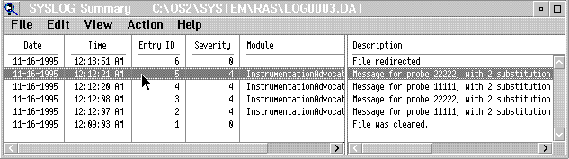

When the system opens the error log, SYSLOG displays a Summary window with the following information for each error log entry:
To see all the details for each error log entry, use the horizontal slider
bar. You can select Help on the menu bar for descriptions of the fields
and options on the Summary window. SYSLOGSummaryWindow

The Summary window is a snapshot of the error log. It allows selection of single or multiple entries.
Be aware that, when you use the active log, the log may change during the session if the system records another error. The error log details for a selected entry may no longer be available from the error log file if the error log wraps. When wrapping occurs, the system adds new entries at the top of the error log and erases the oldest entries. The system erases only enough old information to make room for the new for the new information. If you select an erased error entry, the system displays an error message.
The following information contains a description of the options on the Summary window.